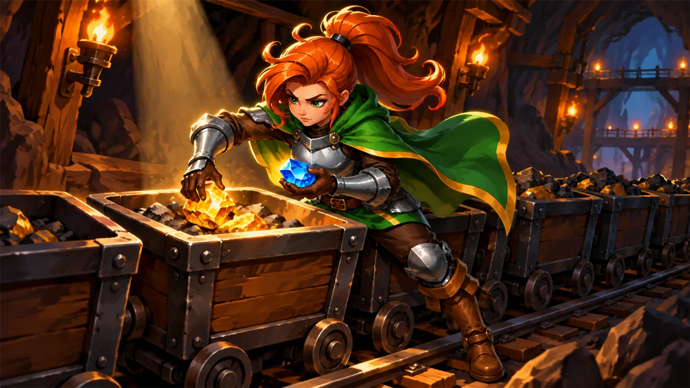

故事：矿坑的资源谷里，食人魔三三两两地晃悠着，其中有投手、有巨怪，还有几个小喽啰。
你的箭只够对付投手，所以得先把它们挑出来。
可敌人是走来走去的，数量说不准——你没法提前知道有几个。
那就准备一个空篮子，贺舒曼说，看到一个投手，就丢进去一个。
扣哒考级 · GESP PYTHON 三级 · 第 5 单元 | 符文矿坑 RUNEMARK MINE
矿车编队 数组与列表
Arrays & Lists

贺舒曼
镜中先知 · 你的向导
矿车从轨道尽头一辆辆滑出来，整整齐齐停成一列。你数了数，一共二十七辆。
工头递给你一张清单：每辆车里装的矿石数量都不一样，你帮我算算总数， 再找出装得最多的那一辆。
你正要一辆辆去看，贺舒曼拦住了你：二十七辆车，你要起二十七个名字吗？
她指了指那一列车：它们本来就是一个整体——这就叫列表。
工头递给你一张清单：每辆车里装的矿石数量都不一样，你帮我算算总数， 再找出装得最多的那一辆。
你正要一辆辆去看，贺舒曼拦住了你：二十七辆车，你要起二十七个名字吗？
她指了指那一列车：它们本来就是一个整体——这就叫列表。
贺舒曼 · 镜中先知
列表是三级最重要的工具，没有之一。它解决的正是"东西太多、起名起不过来"的问题。
接下来的单元，几乎每一段代码都会用到它。
assets/illustrations/py-L3-05-01_cart_formation.webp
【配图位】矿坑轨道上一整列矿车整齐排列，每辆车厢侧面悬浮着发光的编号（从 0 开始）；车斗里装着不同数量的矿石，一名学徒站在车头拿着清单查看。
0 单元导语与目标
Unit Overview
0.1 学习目标
1学完这个单元，你将能……
- 说清列表和"一堆变量"的区别
- 创建列表，并用下标访问其中元素
- 解释为什么下标从 0 开始
- 用
for遍历列表 - 熟练使用
append / len / 修改 / 切片 - 写出求和、求最大值、计数三个经典算法
- 掌握元组、集合与列表解析的用法
2对标 GESP 考纲（Python 三级）
- 掌握一维数组（列表）的定义、初始化与访问方式
- 掌握列表的常用操作：增加、修改、遍历、求长度
- 掌握元组、集合的基本应用，以及列表解析的写法
- 能用列表解决求和、求最值、统计等基础问题
- 考核目标：能读懂并写出带列表的程序，预测输出结果
0.2 考纲对照
| 本单元小节 | 对应考纲条目 | 真题常考形式 |
|---|---|---|
| 1 为什么要用列表 | 一维数组（列表）的概念 | 用列表比用多个变量好在哪里 |
| 2 创建与索引 | 列表的创建与下标访问 | 给一个列表，问某个下标取出什么；负下标是什么 |
| 3 遍历 | 列表的遍历 | for x in lst 与 for i in range(len(lst)) 的区别 |
| 4 常用操作 | 列表的常用方法 | append / insert / remove / pop 的作用；切片的结果 |
| 5 经典小算法 | 用列表解决问题 | 求最大、求和、筛选 |
| 6 元组、集合与列表解析 | Python 的元组、集合、列表解析 | 元组能改吗；set() 去重；列表解析的输出结果 |
1 为什么要用列表
Why Lists
1.1 不用列表有多麻烦
先看"不用列表"要写多少东西：
二十七辆矿车，二十七行代码
Python
cart1 = 12
cart2 = 7
cart3 = 19
...
cart27 = 8
# 想算总数？还得再加二十七个加法……问题 数据一多，变量就爆炸；而且循环根本没法用
换成列表，一切立刻变得清爽：
一列车，就是一个列表
Python
carts = [12, 7, 19, 25, 6, 8] # 一辆车对应一个元素
total = 0
for x in carts: # 循环自动跑遍每一辆
total = total + x
print(total)OUTPUT 77
1.2 列表是什么
打个比方：
列表就像矿坑里的一列编号矿车——按顺序排成一串，每节车厢都有自己的编号。
想找第 3 节车厢？报编号就行；想再挂一节？直接接在末尾。
比"给每节车厢都单独起一个名字"省事太多了。
想找第 3 节车厢？报编号就行；想再挂一节？直接接在末尾。
比"给每节车厢都单独起一个名字"省事太多了。
列表是什么：
列表（list）就是把一堆数据按顺序装在一起的"容器"。
装在里面的每一个数据叫一个元素；元素在列表里的位置编号叫下标（也叫索引）。
写起来就是一对方括号：
装在里面的每一个数据叫一个元素；元素在列表里的位置编号叫下标（也叫索引）。
写起来就是一对方括号：
[12, 7, 19]。
2 创建列表与索引
Creating & Indexing
2.1 索引与下标
图 2（SVG）：列表像一排编了号的矿车，编号从 0 起
创建与访问
Python
carts = [12, 7, 19, 25, 6] # 直接写出来
print(carts[0]) # 第 1 个元素：12
print(carts[2]) # 第 3 个元素：19
print(carts[-1]) # 负数下标：从右边数，-1 是最后一个 → 6
print(carts[-2]) # 倒数第二个 → 25
print(len(carts)) # len() 求长度（有几个元素） → 5
carts[1] = 100 # 直接改掉第 2 个元素
print(carts) # 列表中 7 变成了 100OUTPUT 12
19
6
25
5
[12, 100, 19, 25, 6]
19
6
25
5
[12, 100, 19, 25, 6]
2.2 为什么下标从 0 开始

assets/illustrations/py-L3-05-02_index_access.webp
【配图位】矿坑轨道上排着一列编号矿车，车身上的编号从 0 开始依次递增；一名矿工正站在第 3 号车厢前，伸手把里面的矿石换成一块宝石，头顶有一束聚光打在这一节车厢上；旁边几节车厢纹丝不动；轨道侧面挂着"从 0 开始编号"的小木牌。
为什么从 0 开始？
可以这样理解：下标表示的是"前面有几个元素"。
第一个元素前面有 0 个，所以下标是 0；第三个元素前面有 2 个，所以下标是 2。
这个习惯一开始别扭，但几乎所有的编程语言都这样——早适应早省事。
第一个元素前面有 0 个，所以下标是 0；第三个元素前面有 2 个，所以下标是 2。
这个习惯一开始别扭，但几乎所有的编程语言都这样——早适应早省事。

安雅 · 红发队长
我们排队点名时也是这个规矩：报"第一名"的时候，其实他前面一个人都没有。列表里的第 N 个元素，前面的元素正好是 N-1 个——不对，等下， 是"下标 = 前面的人数"。第 1 个人前面 0 人，他的下标就是 0。
习惯就好。
3 遍历列表
Traversing
3.1 两种遍历写法
"遍历"就是把列表里的元素一个个走一遍。Python 有两种常用写法：
两种遍历方式
Python
fruits = ["苹果", "香蕉", "橘子"]
# 写法一：直接拿到元素（简单，最常用）
for f in fruits:
print(f)
# 写法二：用下标（需要知道位置时用）
for i in range(len(fruits)):
print(i, fruits[i])OUTPUT 苹果
香蕉
橘子
0 苹果
1 香蕉
2 橘子
香蕉
橘子
0 苹果
1 香蕉
2 橘子
3.2 什么时候用哪种
assets/illustrations/py-L3-05-03_traverse_cart.webp
【配图位】矿坑轨道旁，一名矿工正沿着编号矿车从头走到尾，走过和即将走的车厢之间用一串发光脚印连接；每经过一节车厢，车厢里就亮起一小簇光（表示被访问过）；走廊尽头挂着一块写着"遍历"的木牌。
什么时候用哪种？
只是"看看每个元素" → 用写法一，又快又清楚。
需要用到下标（比如要打印"第几号"、或者要改元素）→ 用写法二。
记住一句：
需要用到下标（比如要打印"第几号"、或者要改元素）→ 用写法二。
记住一句：
range(len(列表)) 就是"从 0 到最后一个下标"。
4 列表的常用操作
Common Operations
4.1 常用操作一览
| 想干什么 | 写法 | 说明 |
|---|---|---|
| 在末尾添加一个 | a.append(x) | 最常用！一个一个往里塞 |
| 求长度 | len(a) | 返回元素个数 |
| 访问元素 | a[i] | 下标从 0 开始；负数表示从右数 |
| 修改元素 | a[i] = x | 直接赋值就能改 |
| 删除末尾 | a.pop() | 把最后一个取出来并删掉 |
| 求最大值 / 最小值 | max(a) min(a) | 直接用内置函数 |
| 求和 | sum(a) | 所有元素加起来 |
| 切片 | a[1:4] | 取出下标 1、2、3 的部分（含头不含尾） |
| 判断是否在列表中 | x in a | 返回 True 或 False |
常用操作演示
Python
a = [3, 1, 4]
a.append(1) # 在末尾加一个 1 → [3, 1, 4, 1]
a.append(5) # 再加一个 5 → [3, 1, 4, 1, 5]
print(len(a)) # 5
print(max(a)) # 5
print(min(a)) # 1
print(sum(a)) # 14
print(a[1:3]) # 切片：[1, 4]（下标 1 和 2，不含 3）
print(4 in a) # TrueOUTPUT 5
5
1
14
[1, 4]
True
5
1
14
[1, 4]
True
4.2 切片
切片最容易错的地方：
这个规则叫"含头不含尾"，一定要记牢。 所以
a[1:4] 取的是下标 1、2、3，不包含 4。这个规则叫"含头不含尾"，一定要记牢。 所以
a[0:len(a)] 才等于整个列表。
5 三个经典小算法
Three Classic Patterns
5.1 找最大值
用列表做的题，翻来覆去就是这三个套路。背下来，考试能省很多时间。
套路一：求和
Python
a = [12, 7, 19, 25, 6]
total = 0 # 先准备一个"累加器"
for x in a:
total = total + x # 一个一个往里加
print(total) # 69
# 也可以直接写 print(sum(a))口诀 累加器先归零，循环里逐个加
套路二：求最大值
Python
a = [12, 7, 19, 25, 6]
big = a[0] # 拿第一个当"擂主"
for x in a:
if x > big:
big = x # 有更厉害的，换擂主
print(big) # 25口诀 初值取第一个，遇到更大的就更新
套路三：统计符合条件的个数
Python
a = [12, 7, 19, 25, 6]
count = 0 # 计数器
for x in a:
if x % 2 == 0: # 条件：是偶数
count = count + 1
print(count) # 3（12、6 是偶数……等等，还有谁？）实际答案 2（12 和 6）；注释里的玩笑提醒你：别凭感觉数，让程序数

扣哒鸭 · 调试官
最后一个例子里我故意写错了一句话，你发现了吗？12 和 6 是偶数，19、7、25 是奇数——所以正确答案是 2，不是 3。
我想说的是：心算容易错，程序不会。这就是为什么我们要写循环。
5.2 累加与筛选
6 元组、集合与列表解析
Tuple, Set and Comprehension
6.1 元组：一旦创建就不能改的"列表"（含与列表的转换）
三级考纲除了列表，还要掌握元组（tuple）、集合（set）和列表解析。 它们和列表长得很像，但各有各的脾气。
| 容器 | 写法 | 能不能改 | 能不能重复 | 有序吗 |
|---|---|---|---|---|
| 列表 list | [1, 2, 3] | 能改 | 能重复 | 有序 |
| 元组 tuple | (1, 2, 3) | 不能改 | 能重复 | 有序 |
| 集合 set | {1, 2, 3} | 能加能删 | 不能重复 | 无序 |
| 字典 dict | {"a": 1} | 能改 | 键不能重复 | 有序（3.7 起） |
一句话分清三个括号：
打个比方：列表像铅笔写的名单（能擦能改），元组像刻在石碑上的名单（只能看）。
[] 列表——什么都能改；() 元组——编好就不能动，用来装"不该被改的数据"；{} 集合 / 字典——集合自动去重，字典是"键查值"。打个比方：列表像铅笔写的名单（能擦能改），元组像刻在石碑上的名单（只能看）。
元组的定义、访问与转换
Python
t = (10, 20, 30, 40, 50)
print(t[0], t[-1]) # 10 50 下标访问和列表一样
print(t[1:3]) # (20, 30) 切片也一样
# t[0] = 99 # 报错！元组不能改
print(len(t)) # 5
# 元组与列表互相转换
lst = list(t) # 变成列表
lst[0] = 99
new_t = tuple(lst) # 再变回元组
print(new_t) # (99, 20, 30, 40, 50)
# 元组拆包：一行取出多个值
a, *b, c = t # a 拿第一个，c 拿最后一个，剩下的给 b
print(a, b, c) # 10 [20, 30, 40] 50要点 元组"能读不能写"；
list() 与 tuple() 负责互转6.2 集合：自动去掉重复的"袋子"
集合：去重与快速判断
Python
s = {3, 1, 4, 1, 5, 9, 2, 6, 5, 3}
print(s) # {1, 2, 3, 4, 5, 6, 9} 自动去重
s.add(7) # 加一个
s.discard(9) # 删一个（没有也不报错）
print(7 in s) # True 集合的 in 非常快
# 去重最常见的用法
words = ["a", "b", "a", "c", "a"]
print(list(set(words))) # ['a', 'b', 'c']（顺序不保证）
# 空集合不能写 {}——那是空字典！
empty = set()
print(type(empty)) # <class 'set'>要点
{} 是空字典，空集合要写 set()6.3 列表解析：一行造出一个列表
列表解析：一行顶三行
Python
# 普通写法：4 行
squares = []
for i in range(1, 6):
squares.append(i * i)
print(squares) # [1, 4, 9, 16, 25]
# 列表解析写法：1 行
squares = [i * i for i in range(1, 6)]
print(squares) # 一样的结果
# 带 if 的筛选：只要偶数
evens = [i for i in range(1, 11) if i % 2 == 0]
print(evens) # [2, 4, 6, 8, 10]
# 也能直接处理已有列表
a = [3, 1, 4, 1, 5]
print([x * 2 for x in a]) # [6, 2, 8, 2, 10]要点 格式：
[表达式 for 变量 in 序列 if 条件]
真题演练（2026 年 9 月 · Python 三级）：
元组拆包：
元组与列表转换：
集合：
字典：
元组拆包：
my_tuple = (10, 20, 30, 40, 50)，
执行 a, *b, c = my_tuple 后，
a 是 10、c 是 50，
中间的 b 是列表 [20, 30, 40]
——带星号的那一个收的是列表，不是元组。元组与列表转换：
new_tuple = tuple(list(my_tuple))
得到的是元组，可以正常输出。集合：
set() 建空集合、
set("abc").clear() 清空后是空集合
——注意 set() 不返回内容，clear() 也没有返回值。字典：
dict(z) 要求 z 是"键值对序列"，
例如 dict([("a", 1)])。
assets/illustrations/py-L3-05-04_tuple_set_comprehension.webp
【配图位】莫克矿坑的"容器货架"上摆着四个不同的箱子：一个敞口木箱（列表，能随意取放）、一个用铁条焊死的箱子（元组，只能看）、一个会自动弹掉重复物品的筛子箱（集合）、一个贴着"一行生成"标签的自动打包机（列表解析）；每个箱子上都刻着对应的括号符号 [] () {}
7 代码实战
Level Practice
关卡
资源谷
进入关卡 →思路：先建一个空列表，然后遍历所有敌人，符合条件的就 append 进去。

assets/stages/py-L3-05-stage1_resource_valley.webp
【关卡截图位】请把《资源谷》的游戏画面截图放到此处（放入 assets/stages/ 目录，文件名为 py-L3-05-stage1_resource_valley.webp）。
重点示例：把符合条件的挑进新列表
Python
enemies = hero.findEnemies() # 拿到一整个数组
throwers = [] # 准备一个空数组当"篮子"
for i in range(len(enemies)):
enemy = enemies[i]
if enemy.type == "thrower": # 只要投手
throwers.append(enemy) # 丢进篮子
# 现在 throwers 里装着所有投手要点 空列表 → 遍历 → 判断 → append，这是"筛选"的四步标准流程
为什么要先建空列表？
因为你事先不知道有几个投手。空列表就像一个空篮子，
见到一个装一个，最后自然就装齐了。
如果一开始就写死长度，遇到多一个少一个的情况就全乱了。
去扣哒世界闯这一关 →
如果一开始就写死长度，遇到多一个少一个的情况就全乱了。
8 常见陷阱
Common Pitfalls

扣哒鸭 · 调试官
列表的报错信息都特别短，一不留神就找不着北。四条，都是高频错。
1
下标越界。五个元素的列表却去访问
a[5]。
扣哒鸭：报错是
长度为 n 的列表，合法下标是 0 到 n-1。 最后一个元素要用
IndexError。长度为 n 的列表，合法下标是 0 到 n-1。 最后一个元素要用
a[len(a)-1] 或者干脆写 a[-1]。正确做法：用
a[-1] 取最后一个；遍历用 range(len(a))2
以为
a.append(x) 会返回新列表。
写成 a = a.append(x)。
扣哒鸭：
写成
append 是直接改原列表，它不返回东西（返回 None）。写成
a = a.append(x) 之后，a 就变成 None 了，后面全崩。正确写法：直接写
a.append(x)，不要赋值3
切片范围记成"含尾"。以为
a[1:3] 取三个元素。
扣哒鸭：切片是含头不含尾！
记法：后面那个数字是"停在哪"，不停在它上面。
a[1:3] 只取下标 1 和 2 两个元素。记法：后面那个数字是"停在哪"，不停在它上面。
正确理解：
a[start:end] 取下标 start 到 end-14
求最大值时把初始值设成 0。

扣哒鸭：如果列表里全是负数，答案会变成 0——而 0 根本不在列表里。
正确做法：直接拿
正确做法：直接拿
a[0] 当初始值。正确写法：
big = a[0]9 题目练习
Practice
第 1 题改编自 2026 年 9 月 · Python 三级 第 6 题，其余为原创练习题。
改编自 2026 年 9 月 · Python 三级 · 第 6 题单选题
矿车编队要从一列货物里按规律取货。执行下面 Python 代码后，输出的结果是（ ）。
1 my_list = ['a', 'b', 'c', 'd', 'e', 'f'] 2 result = my_list[::2] + my_list[1::2] 3 print(result)
A.['a', 'c', 'e']
B.['b', 'd', 'f']
C.['a', 'c', 'e', 'b', 'd', 'f']
D.['a', 'b', 'c', 'd', 'e', 'f']
B.['b', 'd', 'f']
C.['a', 'c', 'e', 'b', 'd', 'f']
D.['a', 'b', 'c', 'd', 'e', 'f']
查看答案与详解
答案：C。带两个冒号的切片写法是
两个列表用
要点：
对应小节4 列表的常用操作。
列表[起点:终点:步长]，省略起点终点就表示"从头到尾"。my_list[::2]：从头开始、每 2 个取 1 个 → ['a', 'c', 'e']（下标 0、2、4）；my_list[1::2]：从下标 1 开始、每 2 个取 1 个 → ['b', 'd', 'f']（下标 1、3、5）；两个列表用
+ 拼接，得到 C。要点：
+ 对列表是拼接不是相加；切片得到的是新列表，不会改动原列表。对应小节4 列表的常用操作。
原创练习题单选题
已知
a = [3, 1, 4, 1, 5]，则 a[2] 的值是（ ）。A.1 B.3 C.4 D.5
查看答案与详解
答案：C。下标从 0 开始：
易错点：把下标当成"第几个"，于是选了 B（第 2 个是 1）。
对应小节2 创建列表与索引。
a[0]=3、a[1]=1、a[2]=4。易错点：把下标当成"第几个"，于是选了 B（第 2 个是 1）。
对应小节2 创建列表与索引。
原创练习题单选题
已知
a = [3, 1, 4, 1, 5]，则 len(a) 的值是（ ）。A.4 B.5 C.6 D.3
查看答案与详解
答案：B。列表里有 5 个元素，所以长度是 5。
关键关系：长度为 5 的列表，最后一个元素的下标是
对应小节2 创建列表与索引；4 列表的常用操作。
关键关系：长度为 5 的列表，最后一个元素的下标是
5-1 = 4。对应小节2 创建列表与索引；4 列表的常用操作。
原创练习题单选题
下列 Python 代码执行后，输出的结果是（ ）。
1 a = [1, 2, 3] 2 a.append(4) 3 a.append(5) 4 print(len(a), a[-1])
A.3 3 B.4 5 C.5 5 D.5 4
查看答案与详解
答案：C。原来 3 个元素，
所以长度是 5，
对应小节4 列表的常用操作。
append 两次后变成
[1, 2, 3, 4, 5]。所以长度是 5，
a[-1] 是最后一个元素 5。对应小节4 列表的常用操作。
原创练习题判断题
已知
a = [10, 20, 30, 40, 50]，那么 a[1:4]
的结果是 [20, 30, 40, 50]。（ ）查看答案与详解
答案：错误（×）。切片是含头不含尾的：
提示：想要
对应小节4 列表的常用操作。
a[1:4] 取下标 1、2、3，结果是 [20, 30, 40]，不包括下标 4 的 50。提示：想要
[20, 30, 40, 50] 应该写 a[1:5]。对应小节4 列表的常用操作。
原创练习题单选题
下列 Python 代码执行后，输出的结果是（ ）。
1 a = [5, 3, 9, 1] 2 big = a[0] 3 for x in a: 4 if x > big: 5 big = x 6 print(big)
A.1 B.5 C.9 D.18
查看答案与详解
答案：C。这是"求最大值"的标准写法：
初值
最终输出 9。
对应小节5 三个经典小算法。
初值
big = 5；遇到 3（不大于 5）、9（大于 5，更新为 9）、1（不大于 9）。最终输出 9。
对应小节5 三个经典小算法。
原创练习题判断题
在 Python 中，列表的下标可以是负数，
a[-1] 表示最后一个元素。（ ）查看答案与详解
答案：正确（√）。负数下标表示"从右往左数"：
它和
对应小节2 创建列表与索引。
-1 是最后一个，-2 是倒数第二个，以此类推。它和
a[len(a)-1] 是等价的，但写起来短得多。对应小节2 创建列表与索引。
原创练习题编程题
题目要求：已知一个整数列表
a = [12, 7, 19, 25, 6]，
编写程序输出：① 所有元素的和；② 最大值；③ 元素个数；④ 其中偶数的个数。查看参考答案与要点
a = [12, 7, 19, 25, 6]
# ① 求和
total = 0
for x in a:
total = total + x
print(total)
# ② 求最大值
big = a[0]
for x in a:
if x > big:
big = x
print(big)
# ③ 元素个数
print(len(a))
# ④ 偶数的个数
count = 0
for x in a:
if x % 2 == 0:
count = count + 1
print(count)
输出：69、25、5、2
要点：
① 求和、求最值、计数是三个基本套路，都要"先准备变量，再循环，最后输出"；
② 求最大值时初值必须取 a[0]，不能取 0；
③ 判断偶数用 x % 2 == 0（或用位运算 x & 1 == 0）。
对应小节5 三个经典小算法。
10 本单元小结
Unit Summary
贺舒曼 · 镜中先知
列表这一章，你只要牢牢记住三句话：一、下标从 0 开始，最后一个的下标是"长度减一"。
二、加元素用 append，求长度用 len，遍历直接 for x in a。
三、求和、求最值、计数——三个套路走遍天下。
把它们练熟，后面学字符串、学排序，都会轻松很多。
你在矿车编队前收获了什么
- 列表——把一堆数据按顺序装在一起的容器，写作
[a, b, c]。 - 下标——从 0 开始；负数下标表示从右往左数，
a[-1]是最后一个。 - 长度与下标的关系——长度为 n 时，合法下标是 0 ~ n-1。
- 遍历——
for x in a直接取元素；for i in range(len(a))取下标。 - 常用操作——
append / len / max / min / sum / pop；切片是"含头不含尾"。 - 三个套路——求和（累加器）、求最值（初值取 a[0]）、计数（计数器）。
- 筛选四步——建空列表 → 遍历 → 判断 →
append。